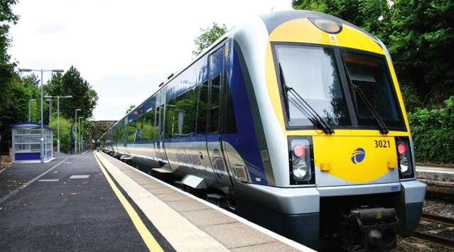

| Travel Method | Notes | Estimated Price |
|---|---|---|
| Car |
Drive directly to the festival location. Ample parking is available onsite; however, arriving early is recommended to secure your spot, especially during peak hours. Carpooling is a fantastic option to save on parking fees and minimize your carbon footprint. Consider planning your route in advance to avoid any potential road closures or heavy traffic. Follow all posted parking regulations to avoid fines. Ensure your vehicle is in good condition for the journey, and remember to double-check your parking pass if required. | £20 for parking (if applicable) |
| Train  |
Take the train to Titanic Quarter, where you'll find a short, pleasant walk to the festival venue. Local train services are scheduled frequently throughout the festival days, making this a convenient option. Be sure to check for group discounts that may be available for families or larger parties. Additionally, find out about any special festival service times that may be offered, particularly during busy periods. Keep an eye on schedule updates via the train provider’s website, as delays can sometimes occur. Bring a light jacket, as some trains can be chilly, even in warm weather. | £15 each way |
| Bus |
Utilize the local bus service that connects major neighborhoods directly to the festival site. Several routes will operate regularly throughout the festival duration, ensuring easy and efficient transport. Family-friendly discount rates are available on selected routes, making this an economical option for large groups. To make the most of your journey, check the latest bus schedules prior to the festival dates, as there may be temporary changes or extended hours during the event. Consider downloading a bus tracking app to stay updated on arrival times. | £10 each way |
| Walking |
Enjoy a scenic walk from the Titanic Quarter to the festival grounds. This option is particularly ideal for residents living nearby and promotes a healthy, active lifestyle while enjoying the festive atmosphere. Streets leading to the festival will be lined with signs and decorations, making your stroll even more inviting. Feel free to bring along a picnic or snacks to enjoy along the way, and don’t forget to bring a reusable water bottle to stay hydrated! Remember to wear comfortable shoes, as you'll likely be walking a fair distance, especially if you're also planning to explore the area. | Free |